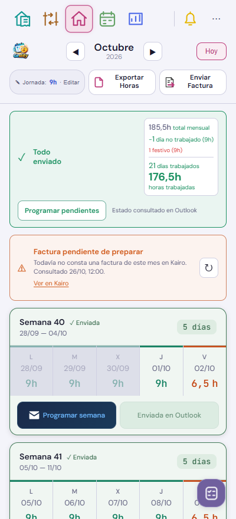
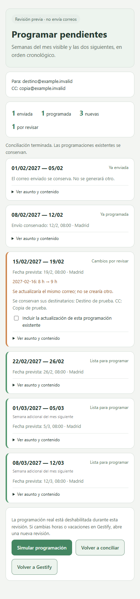

El botón del aviso y la opción de cada semana abren la misma conciliación. Se comprueba Outlook antes de proponer programaciones nuevas. Los correos ya enviados se conservan y las programaciones con cambios se actualizan únicamente tras revisar ese mismo correo.
Demostración con datos ficticios. No conecta con Outlook ni puede crear correos reales. Usa el mismo modelo de conciliación y la misma pantalla que el candidato de Kairo.
Puedes abrir una revisión y simular su resultado.
Recorrido preparado
Home · «Programar pendientes» → enviados y programaciones existentes → revisión de fechas, cambios y bloqueos → simulación sin correo real.
El alcance siempre es el mes visible más dos semanas adicionales. La fecha prevista es el último día laboral de la semana a las 08:00 de Madrid. Una fecha vencida, una semana sin días laborables, un duplicado o una operación sin confirmar requieren revisión. Una semana pendiente impide adelantar la siguiente.
Comprobación del 28/10 en el Vivo: la conciliación de sus horas con Outlook no detectó diferencias. La interfaz ficticia se ha probado en Chrome del móvil, incluida la simulación y la opción individual. Se detectó y corrigió en el candidato el intervalo antiguo de Recordatorios, que ahora comparte las dos semanas adicionales con Home. Los datos de la PWA instalada permanecen intactos. La prueba de interfaz móvil con datos ficticios se distingue de la comprobación de la PWA publicada, que se realiza después del despliegue.
Entrada desde Home · datos ficticios

Revisión del lote · datos ficticios

Integración v511
Home incorpora «Programar pendientes» y mantiene «Programar semana». Ambas opciones abren la misma conciliación privada; la programación requiere confirmar la revisión. El estado se consulta en Outlook, sin marcar una semana enviada por abrir una ventana.
Se comprobó una programación técnica con datos ficticios a la propia cuenta para un jueves a las 08:00 y su actualización automática al miércoles, conservando un solo correo y el mismo identificador. Las pruebas no crean ni reprograman correos reales de horas. La prueba automática se anuló y retiró; la auditoría confirmó que las programaciones originales siguen intactas. El registro y las imágenes del buzón quedan fuera del atlas.
La captura de Home conserva el resumen a la derecha. Su propuesta de rediseño sigue separada. Solo se actualizan las tres capturas de Home afectadas; se conservan las otras 170 y la evidencia histórica.
La revisión del candidato contra Kairo real por HTTPS confirmó cuatro enviadas y tres programadas; su confirmación no hizo cambios y devolvió los estados a Home. La consulta automática requiere el permiso de red local del navegador; la revisión sigue disponible si se deniega. La prueba física de la PWA del Vivo se registrará tras publicar la versión nueva. La sesión de Outlook puede necesitar un nuevo inicio de sesión si Microsoft la caduca; en ese caso se bloquea la programación.